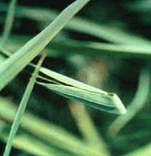
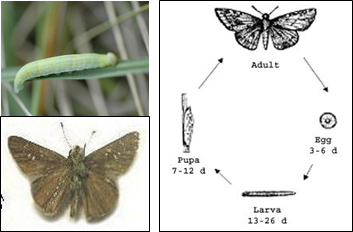

PESTS OF RICE (BORERS AND FOLIAGE FEEDERS) :: Major Pests :: Rice Skipper
6. Rice skipper: Pelopidas mathias (Hesperiidae: Lepidoptera)
|
 |
Folded Leaves (IRRI)
|
 |
Bionomics: Adult butterfly has brown coloured wings and curved antennae. Eggs are laid singly on the leaf blades. Larva is pale green with constricted neck. |